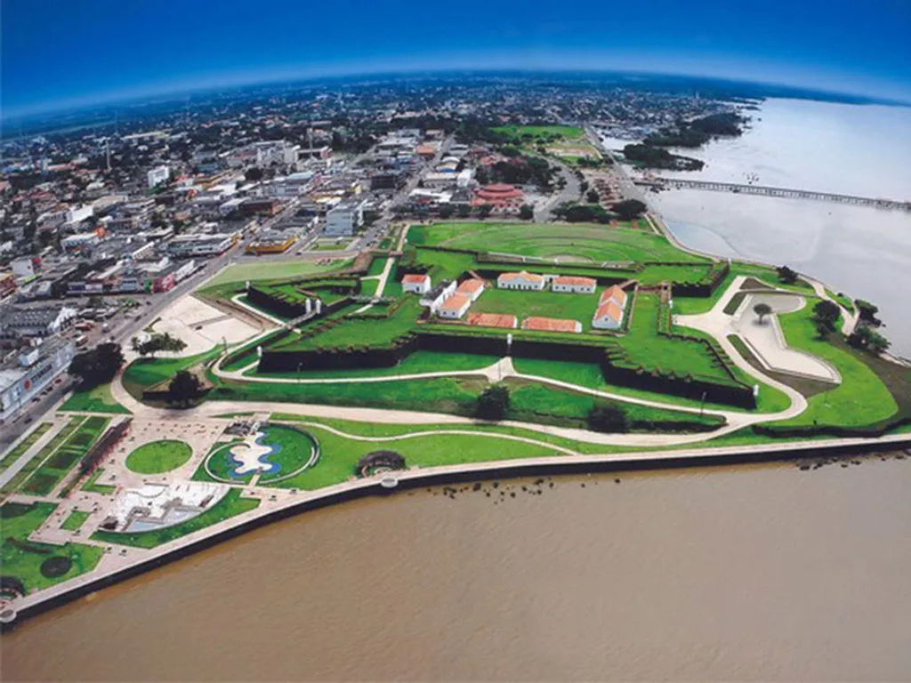

O Amapá está localizado na região Norte do Brasil e faz fronteira com a Guiana Francesa. O estado é conhecido por sua grande preservação ambiental, com extensas áreas cobertas pela Floresta Amazônica e diversas unidades de conservação. Sua capital, Macapá, destaca-se por estar localizada às margens do Rio Amazonas e pela presença da Fortaleza de São José de Macapá, importante patrimônio histórico da região. A economia amapaense baseia-se no extrativismo, na mineração, na pesca e no comércio, enquanto sua cultura apresenta forte influência indígena, africana e amazônica, refletida nas festas populares, na culinária e nas tradições locais.

Voltar